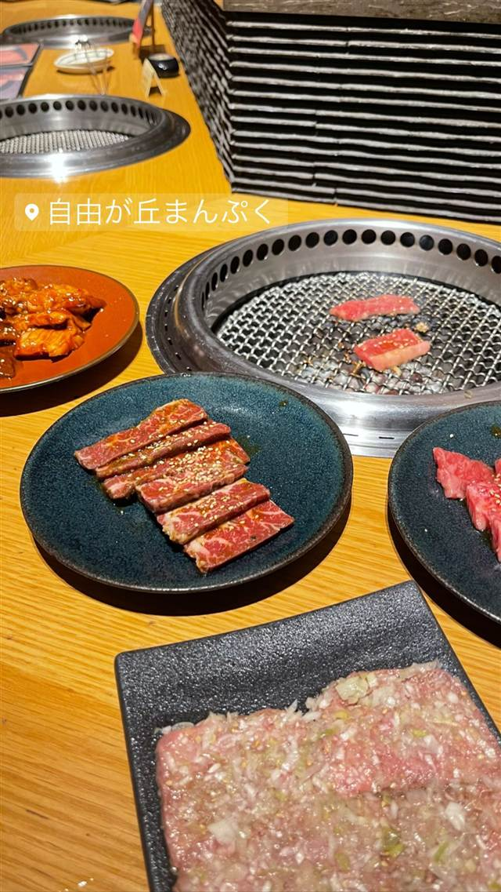
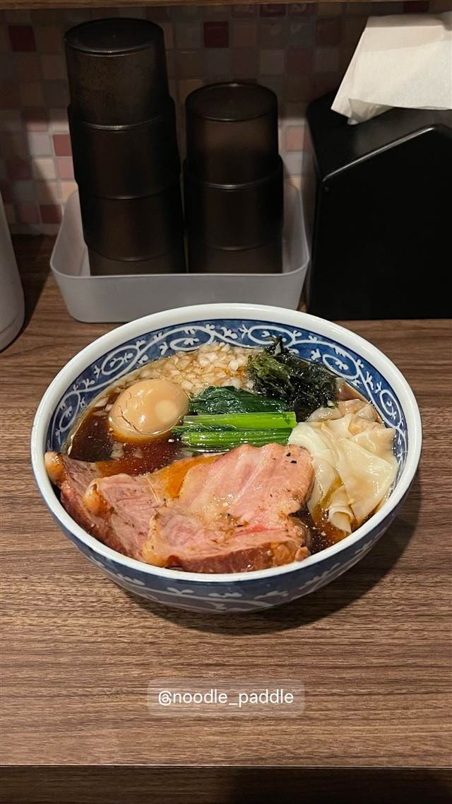
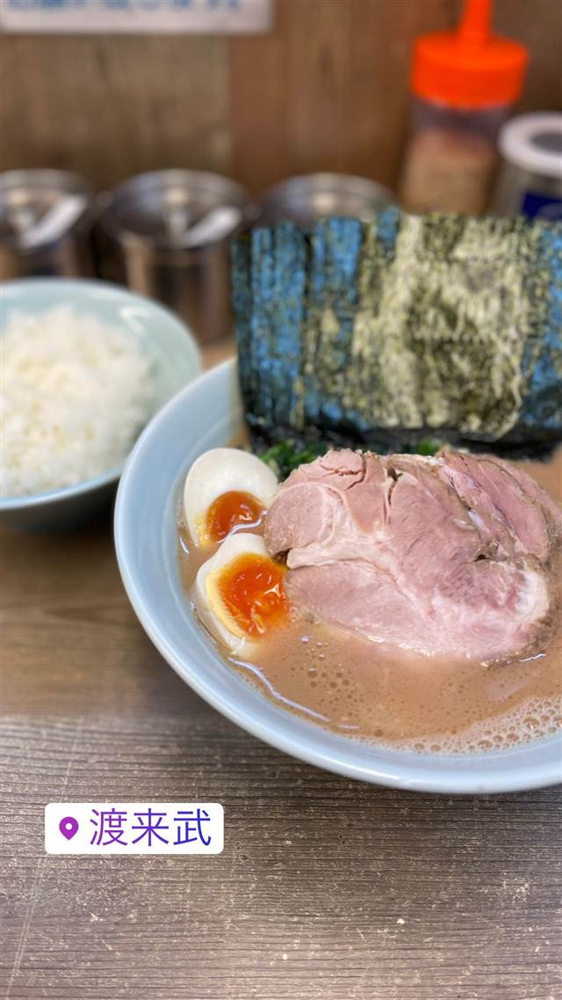

自由が丘まんぷく
1948年創業「まんぷく」発祥とされるねぎタン塩
自由が丘まんぷく
「自由が丘まんぷく」は、1948年に東京・勝どきで創業した老舗焼肉店「まんぷく」の系列店。看板メニューの「ねぎタン塩」はまんぷく発祥と言われる定番で、黒毛和牛のユッケなど都内では希少な一品も味わえる。
TRIVIA
へえ、という話
- 定番の「ねぎタン塩」はまんぷくが発祥とされ、70年以上愛され続けている
- 都内では珍しくなった黒毛和牛のユッケも提供している
REVIEWS
みんなの声
3.36食べログ
「ねぎタン塩と黒毛和牛の味」に注目
- とろけるようなねぎタン塩や黒毛和牛の各部位の美味しさを評価する声が多い
- 黒を基調にした落ち着いた高級感のある店内と丁寧な接客を評価する声がある
- 席が狭く料理を頼みにくいことや接客が急かされると感じる人もいる
食べログ 口コミ352件
| 創業 | 自由が丘店は1995年5月開店（「まんぷく」自体は1948年に東京・勝どきで創業） |
|---|---|
| 系譜 | 1948年、東京・勝どきで創業した焼肉店「まんぷく」の系列店。運営は株式会社テイクファイブ（1993年設立）。 |
| 看板 | ねぎタン塩、ねぎ塩カルビ、黒毛和牛ユッケ |
| こだわり | 創業時からの名物「ねぎタン塩」はまんぷく発祥とされる一品。 |
| 予算 | 昼 ¥2,000～¥2,999 夜 ¥6,000～¥7,999 |
| 定休日 | 無休(年末年始を除く) |
| 場所 | 自由が丘 東京都目黒区自由が丘 |
| 注意 | 自由が丘駅から徒歩2〜3分、席数60席、宴会最大60名、年中無休。 |
食べたもの：焼肉
NEARBY
近い店・同じ系統の店
-

★34 醤油・中華そば 自由が丘駅 NOODLE パドル 元住吉の徳島ラーメン店が移転改称した生姜醤油ラーメン 昼 ¥1,000～¥1,999 夜 ¥1,000～¥1,999 -

★17 家系 自由が丘 渡来武（トライブ） 「武蔵家から渡って来た」が店名の由来のどろどろ濃厚家系 昼 ～¥999 夜 ～¥999 -
 ★2
焼肉 白金高輪駅
炭焼 金竜山
ロンドン帰りの店主夫妻が焼く上タン塩とシャトーブリアン
夜 ¥20,000～¥29,999
★2
焼肉 白金高輪駅
炭焼 金竜山
ロンドン帰りの店主夫妻が焼く上タン塩とシャトーブリアン
夜 ¥20,000～¥29,999
-
 ★4
焼肉 関内駅
関内苑 本店
韓国職人仕込みのキムチとA5和牛の手打ち冷麺
昼 ¥1,000～¥1,999
★4
焼肉 関内駅
関内苑 本店
韓国職人仕込みのキムチとA5和牛の手打ち冷麺
昼 ¥1,000～¥1,999
-
 ★5
焼肉 鶯谷駅
焼肉 鶯谷園
1968年創業、半世紀以上続く良心価格の厚切りタン
夜 ¥6,000～¥7,999
★5
焼肉 鶯谷駅
焼肉 鶯谷園
1968年創業、半世紀以上続く良心価格の厚切りタン
夜 ¥6,000～¥7,999
-
 ★6
焼肉 不動前
焼肉しみず
牛タンの中心部だけを使う厚切り黒毛和牛タン
夜 ¥10,000～¥14,999
★6
焼肉 不動前
焼肉しみず
牛タンの中心部だけを使う厚切り黒毛和牛タン
夜 ¥10,000～¥14,999